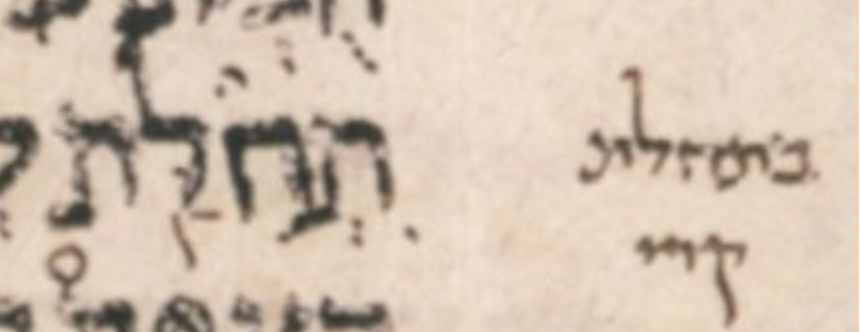

| bcv (tanach.us) | 2s21:9 |
| MPK | ◌ִתְחִלַּ֖ת |
| qere | בִּתְחִלַּ֖ת |
| at issue | בּ |
| at issue English | added a dagesh to bet |
| folio col line | 181B 1 26 |
The MPK has no letter to carry a dagesh for the qere’s ב.
Unlike the dagesh, the ḥiriq does not need a letter to carry it; it is allowed to be an orphan. It appears before the sheva of the initial ת. Unlike the manuscript, our MPK shows that orphan ḥiriq on a dotted circle.